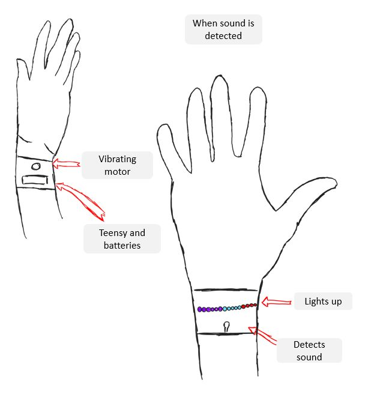

DES222 Task 3 Kaleb McKewen
The Habitualization Bag
Ricardo - Programming, research, fabrications
Kaleb - Programming, electronics, fabrication, research
Jorja - Design, fabrication, research
Add hero IMAGE!
Table of Contents:
Design Intent
Similar Projects
Design Concepts
Pseudocode
Wiring Diagram
Research
Team - 7/9/2023
Our team was formed during a class workshop where individually we pitched ideas. Originally my idea was a
rave suit. A suit that could be worn at raves that reacted to sound around you. It could display different
patterns and colours based on the music around you. Ricardo's idea was a helper for blind people that would
use vibration haptics to alert blind people of objects around them, for example, if they are about to walk
into something. While Jorja's idea was to help hearing-impaired people by visualising high frequencies or
different sounds as haptics or lights. This tied into both Ricardo's and my idea thus we formed a group.
Jorja had a background of sewing and fabrication, Ricardo had a background of coding and 3D printing while I
had a background of coding and wiring. Thus we assigned our roles based on our strengths.
Prompt
Our ideas all focused around the same prompt
Being in place: Relationships with spaces
Raw Brainstorming
Some raw brainstorming from our first workshop.
Haptic feedbacks to sounds for deaf people.
Could react to different frequencies like bomb alarms.
The main idea, react to sound and displaying as visual and sensory (haptics).
Could be in different forms:
Handbag with haptics and LED strips
Different pieces of clothing such as a belt that can use haptics to tell you want direction a sound is
coming from.
Backpack that has LED strips to visualise sound to let people know of sounds near them.
We expanded from just deaf people to also people who have other hearing impairments and for people that have
headphones in as this is a current modern day issue of people not listening to their surroundings.
Design Intent
Myself and Ricardo both created mock brainstorms that we felt encompassed what we are trying to achieve, we then combined and ended up with:
Because there are so many situations where hearing-impaired individuals struggle to hear their environments, we intend to change the lack of auditory awareness to helpful alternatives through more prominent senses for those who have hearing impairments or wear earphones so they can *visualise and feel *the sounds of their environment to improve their overall safety and quality of life. To do this, we will engage with the user's relationship with their other senses such as sight and touch.
General Research - 9/9/2023
I found some good general sources to start looking at for what we were trying to achieve
Vibration motors using Micro:bit
Where you can buy the mini
vibrating motors
Addressable LEDs and buzzer motor with
Micro:bit
LED strip with Micro:bit
Using GlowBit and
Micro:bit
Design Concepts - 16/9/2023
Ricardo made two design concept, one for a handbag and one for a backpack
We decided we would use the backpack design as it applies to everyone


Jorja also made two design concepts that focus on the future of what is possible when wearable technology gets smaller and more compact
Pseudocode
I decided to make some Pseudocode to get a rough idea of how the Micro:bit's could would function
I also noted if the main thread is too overloaded for one Micro:bit we could split to two, one for each LED
strip, Microphone and vibration motors (like one per shoulder strap).
We decided we would use two microphones to experiment with directional sound for users to be able to tell if the sound is more to their left or right based on which LED lights are lit up more of which vibration motors are vibrating.


Wiring Concept
Once again responding to Ricardo's concepts and my own Pseudocode I made a wiring diagram using TinkerCad which is a nice website for creating diagrams and visualising circuits, it even has lots of Micro:Bit components.
The only I could one I could not find was a Microphone so I used a different sensor that looked similar and 3 wires like the Microphones we may use. I wired it up using a Micro:Bit breakout board and added notes on what each component is.
I decided to wire the vibration motors in series to save a lot of extra wiring (however it is unconfirmed if this would work more research is required).
I noted not to pay to much attention to which pins each input and output was wired to as it was not finalised.
LED and Microphone Research
I found a pretty cheap external microphone that may be useful to try and have a microphone outside of the backpack for better pickup
Decided we would use NeoPixels as they have a built in library for Micro:Bit that look pretty easy to code as seen in the documentation
Up to 2023/9/17